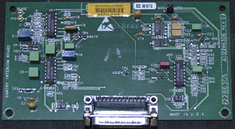

Operating Documentation
Direction 5196839-800, Rev# 6
RT16 and Xtra Service Info Adv
Operating Documentation |
| Required Persons | Preliminary Reqs | Procedure | Finalization |
|---|---|---|---|
| 1 |
| Last Revised: | August 12, 2003 |
| Item | Qty | Effectivity | Part# | Manufacturer | |
|---|---|---|---|---|---|
| ESD Wrist-Band | 1 | - | - | - | |
| Phillips #1 screwdriver | 1 | - | - | - | |
| Quarter inch ratchet | 1 | - | - | - | |
| 6 inch extension | 1 | - | - | - | |
| 7mm socket | 1 | - | - | - | |
Remove right side cover.
| Always turn OFF the HVDC before the 120 VAC. Turning OFF 120 VAC power before HVDC power can result in equipment damage. | |
Turn off the three (3) main power switches (Axial Drive, HVDC, 120VAC) on the Service Switch Panel.
Use the quarter inch ratchet to loosen but not remove the 2 lower nuts and washers.
| NOTE: | Be careful not to lose the nuts and washers. Also notice that the flat washer is installed first, then the lock washer and then the nut. |
Remove 2 upper nuts and washers.
Disconnect control cable.
Remove 4 screws that secure intercom board.
Reinstall intercom board in reverse order. Verify that J2 jumper is in auto position.
Do the following:
Reference “Remote Intercom Board,” for test point and adjustments.
J2 AGC control Normal setting is Auto.
Illustration 1: Remote Intercom X Board - Obsolete (no adjustments)
